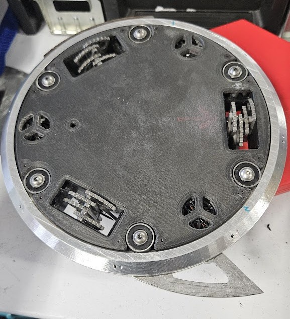

1lb PlAnt: Oingo Boingo
1lb PlAnt: Oingo Boingo
A 1lb plastic combat robot used to compete in an intramural tournament, made with friends on the Northeastern Combat Robotics team.
1lb PlAnt: Oingo Boingo
A 1lb plastic combat robot used to compete in an intramural tournament, made with friends on the Northeastern Combat Robotics team.
 1lb PlAnt: Twoobe
1lb PlAnt: Twoobe
Another 1lb plastic combat bot, inspired by the "Noob Tube" and made with another friend on the team. A work in progress for the future.
 Rain Garden Exhibit
Rain Garden Exhibit
My Cornerstone of Engineering final project: An interactive, accessible museum exhibit made to teach children about sustainability.

Spinny BoiA 3lb ring spinner combat robot I have lightly assisted with making. Made to compete in NHRL in Norwalk, CT. Includes the Spinny Boi 3000 and 3001.